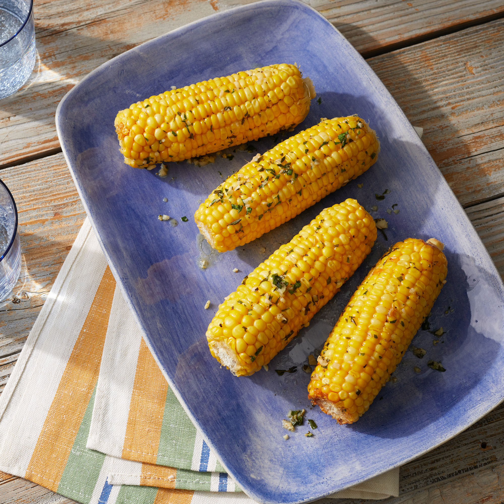

Oven-Roasted Corn on the Cob

Oven-Roasted Corn on the Cob
Sweet, fresh corn is a popular addition to summer
salads, soups, and pastas. Stacks of corn on the cob
complete summer barbecues. But with corn available
virtually year-round, a delicious side like this
oven-roasted corn recipe is easy to add to the plate
or buffet, no matter the month on the calendar.
Whether you purchase white or yellow, sweet corn is so
deliciously crisp and tender that it can be cut fresh
from the cob and added to dishes without being cooked.
Grilled corn on the cob is always a treat, but you
can achieve that same great taste without firing up
the grill. Here, find out the best way to make corn
on the cob in the oven and how to flavor it so it's
never boring.
Ingredients
- 1/4 cup unsalted butter, softened
- 1 tablespoon chopped fresh flat-leaf parsley
- 2 medium garlic cloves, minced (2 tsp.)
- 1 teaspoon chopped fresh rosemary
- 1 teaspoon chopped fresh thyme
- 3/4 teaspoon kosher salt
- 1/2 teaspoon black pepper
- 4 ears fresh corn, husks removed
Instructions
- Preheat oven to 425°F. Stir together butter, parsley,
garlic, rosemary, thyme, salt, and pepper in a bowl
until evenly combined.
- Spread 1 tablespoon herb butter on each corn cob;
wrap each individually in aluminum foil. Place
foil-wrapped corn on a baking sheet. Bake in
preheated oven until corn is soft, 20 to 25 minutes,
turning once halfway through cook time. Remove corn
from foil, and serve